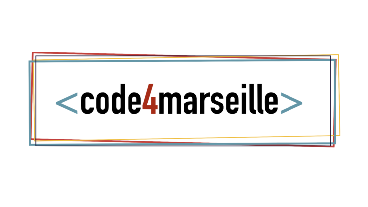

EN
EN
Hello, I'm Emz 👋🏻
Ruby on Rails / Js Fullstack Developer
Alumni du Wagon avec un background Graphic Design. J'aime l'UI/UX Design, le développement et les sports de glisse 🏄🏻♀️. Je suis ouverte aux opportunités FullStack Ruby dans le monde entier 🚀 A la recherche de nouveaux défis après plus d’an en tant que Fullstack Rails Developer freelance. Afin de poursuivre ma montée en compétences, notamment sur du React, je souhaiterais aujourd’hui rejoindre une équipe et me confronter à de nouveaux challenges techniques.
Emilie Murat
FullStack Web Developer
FORMATIONS
2019Certifications Ruby, R.O.R. et Js -#Open Classroom
2019Bootcamp Full-Stack Developer -#Le Wagon Marseille
2018Certificat «Marketing Numérique» -#Google Ateliers Numériques
2016Certification Infographiste Multimédia -#AFIP Villeurbanne
20081ere année aux Beaux Arts de Dijon -#ENSA Dijon
2007Licence d’Anthropologie -#Université Lumiere Lyon 2
EXPERIENCES PROFESSIONNELLES
Février 2021 à Avril 2024 - Lead R.O.R Developer (Drime) Player vidéo responsive, interactif, encapsulable et multilingue. Format vidéo Drime pour la lecture des vidéo. Éditeur de vidéo Drime automatisé. Technologies utilisées :Figma, Ruby on Rails, Vanilla JS, ES6, JQuery, Json, HTML, CSS, SCSS, PostgreSQL, SQL, Heroku, AWS, Azure APIs, Git, Github, Gitlab, Docker.
Mars 2020 à Février 2021 - Lead R.O.R Developer (Pickaden) Logiciel SaaS de gestion de planning et moteur de recherche. Technologies utilisées :Illustrator, Photoshop, Figma, Ruby on Rails, ES6, HTML, CSS, SCSS, PostgreSQL, SQL, Heroku, Git, Github, AWS, Sendinblue, WordPress.
Dec 2019 - Developer R.O.R. (Hackathon du cinéma) «Ciné-Talks » : Faciliter la création d’événements autour d’un film. Technologies utilisées :HTML/CSS, Ruby, Rails, Git, PostgreSQL.
Nov 2019 - Mentorat Rails (Rails Girls Saint-Etienne) Coacher les participants pour l'installation des environnements de développement et la création d'une petite application rails scaffoldée. Technologies utilisées :Ruby, Rails, Postgres, Git, PostgreSQL.
Nov 2019 - Teacher Assistant (Le Wagon Marseille) Support technique aux étudiants du bootcamp «Fullstack. Developer» HTML, CSS Components, Flexbox, Bootstrap, UX/UI. Technologies utilisées :HTML5, CSS3, Bootstrap, Git.
Oct 2019 - Developer Vue.Js (Hackathon du Frioul) Développement en VueJS d'une fonctionnalité (non déployée) sur une application web pendant deux jours. Technologies utilisées :Vue.js, HTML/CSS, Git, Illustrator.
2016 - Graphiste/Webmaster Wordpress (Nova360°) 2016 - Graphiste/Webmaster Wordpress (Amathée) 2015 - Graphiste (Pix’elle)
AUTRES EXPERIENCES PROFESSIONNELLES
2010 | 2019 - Industries (Nucléaire - Aéronautique - Pharmaceutique - Alimentaire - Chimie) METROLOGIE | QUALITE | COLORISTE PEINTURE INDUSTRIELLE
2002 | 2009 - Travail saisonnier (commerce - snacking - skiman - arboriculture - bar)

CONTACT
SKILLS
HTML5/CSS3
RUBY/RAILS
JAVASCRIPT
REACT/REDUX
GIT/GITHUB
SQL
WORDPRESS
JSON
MVC
ILLUSTRATOR
PHOTOSHOP
INDESIGN
LANGUES
Anglais : avancé
Espagnol : notions
Allemand : notions
Français : langue maternelle
INTERETS
Mes Projets
Drime

Pickaden
Lead Junior Ruby on Rails / JS Developer
Mars 2020 à Février 2021 - Freelance - Full remote
www.pickaden.com

React-flats
Application React.js
Projet personnel - exercice (Janvier 2020)
https://kwette.github.io/react-flats/
Giphy-api_lil' app
Application React.js
Projet personnel - exercice (janvier 2020)
https://github.com/Kwette/react-gifs
Buy & Co !
Ruby On Rails application
Projet personnel - exercice (Décembre 2019)
https://github.com/Kwette/petites-annonces-rails
Hackathon du Cinéma des Arcs
Developer Fullstack Rails/JS
Festival du cinéma des Arcs (Décembre 2019)
https://lesarcs-filmfest.com/fr
Teacher assistant
Mentoring Rails
Hackathon du Frioul
